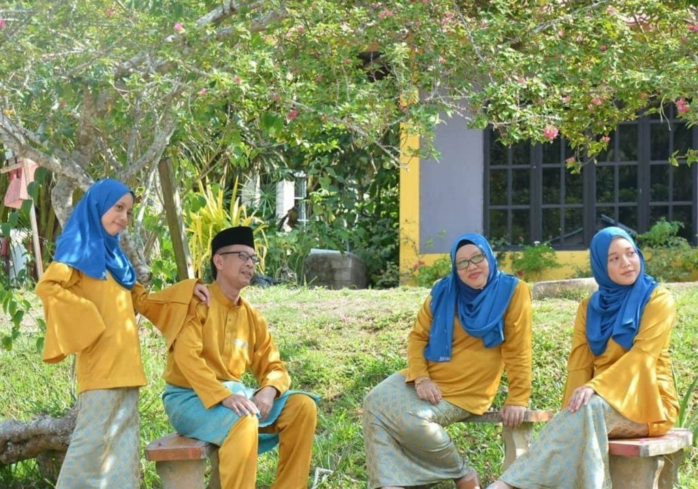
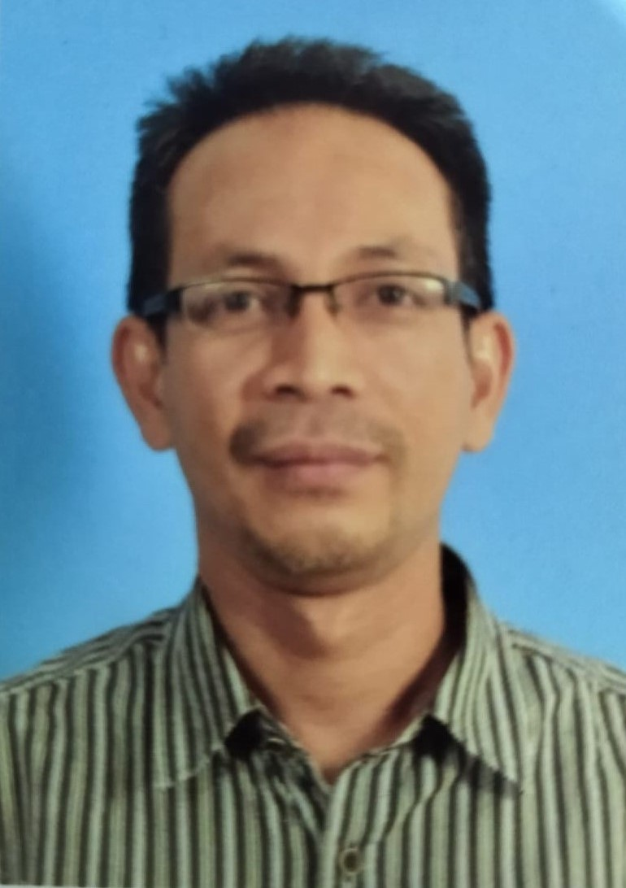
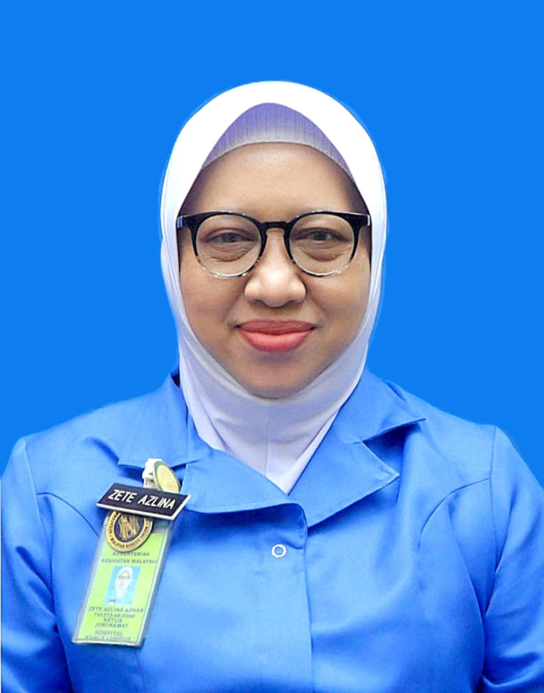
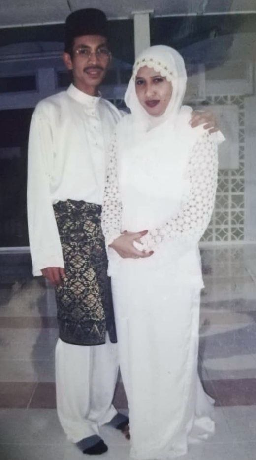
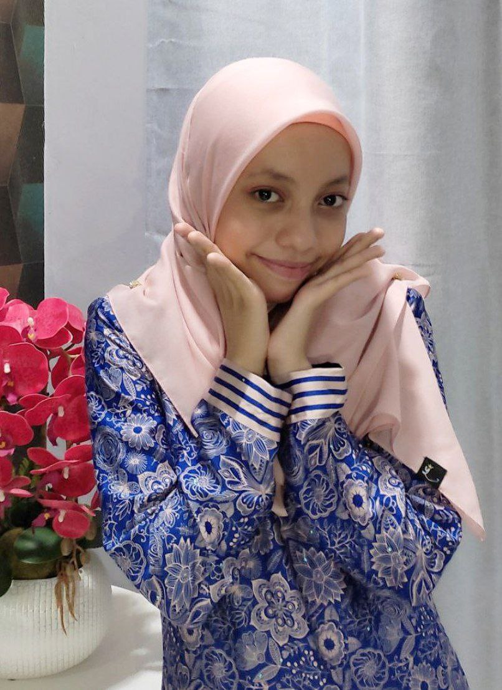
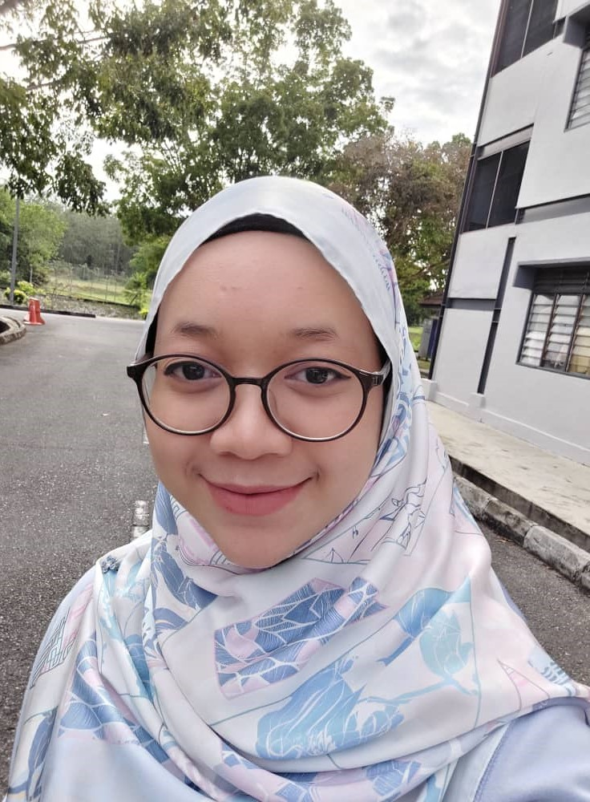
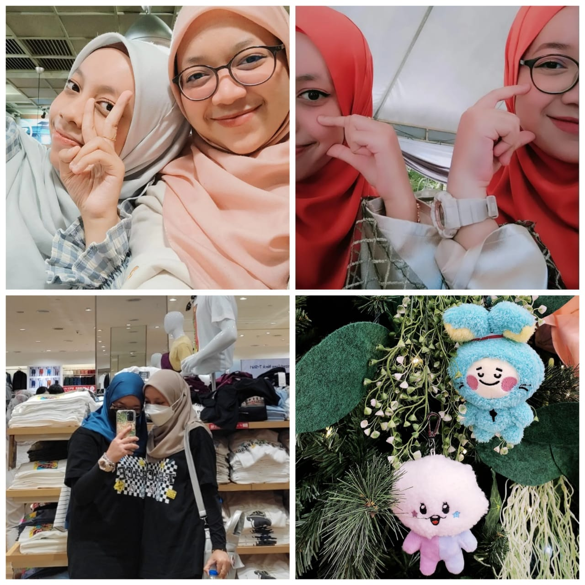

I'm gonna introduce my small family to all of you!

The picture above shows a complete small family of mine.💝
This picture was taken at Pahang which is my mom's hometown during Eid al-Fitr.🎇
My family consists of four, including myself.

💖MY BELOVED AYAH💖
My beloved dad or ayah's full name is Syamzuri Bin Sulaiman. He was born on 3 January 1973 at Perak. He has 13 siblings. He has been working at RHB Investment Bank Berhad since I did not even exist in this world yet. He used to be a senior executive but his current position at his workplace is an assistant manager at Custody and Nominees Department for Local and Foreign Corporate Action which related to operates securities, stock, debt and derivatives, stock broking, and future businesses. During his free time, he loves window shopping. My dad is that type of someone who is very approachable and friendly. He is very protective and he will always ensure that he will be able to fulfill our needs.😊

💖MY BELOVED IBU💖
My beloved mom or ibu's full name is Zete Azlina Azhar Binti Ahmad Tajuddin. She was born on 15 December 1974 at Perak. However, my mom and her family moved to Pahang as my grandpa was rewarded a FELDA land there. My mom has 4 siblings and all of them are girls. My mom already serves as a nurse for 24 years at Kuala Lumpur General Hospital in Orthopaedic ward. It was quite emotional for me as I recall my mom wearing her white uniform as a nurse when I was young. Currently, my mom level up her position as a "Sister". Apart from nursing, as a "Sister", my mom also carries responsibility to handle the management of department at Kuala Lumpur General Hospital. During her free time, my mom love to hangout and trying new recipe at home. Different from my dad, my mom is a shy person. However, she became friendly when she is comfortable with someone.
(I literally followed my mom's introvert side😉)

💖A LOVER💖
My parents got married in 11 November 2000. The date was beautiful right? 11.11 is a reminder for Shopee big sales too😂😆
Two years of marriage, they finally welcomed me into this world. I am so lucky to have both of you as my strongest support system on days full of errands. Thank you for always be there for me during my ups and downs. I am still learning on how to cope with difficulties in journey called "life". With that, please stay with me for a long time, ibu and ayah. Someday I wish I can make both of them proud.
May Allah protect this marriage forever. 22 years of marriage and forever to go💖 May Allah showers ibu and ayah with good health and happiness. I love both of them with all my heart.💞

💖ME💖
Hello! This is me, Alya.😃 I am the eldest daughter in my family. My family often called me "kakak" and "Sara". A little bit fun fact, I used the terms "kita" since I was a kid until now. For instance, "ibu, kita sayang ibu."😂 It was a habit since my childhood.
p/s : That's a brief introduction of myself. If you want to know more about me, let's take a look at my "Biodata" webpage😉

💖MY BELOVED SISTER💖
My beloved sister's full name is Nur Alya Marlisa Binti Syamzuri. I usually called her "adik" since we were both still a child. She was born on 16 September 2005. Every year during her birthday, she will flex to the core as her birthdate fall on the same day with Malaysia Day, and it is a public holiday. Not only that, she often flex about her name too, as "Lisa" is one of Blackpink member's name (Well-known South Korea Girl Group)😒😆 She is 17 years old, as of 2022. She is currently studying at Sekolah Menengah Kebangsaan Datok Lokman, Kuala Lumpur. She is "PT3 candidate tersakiti" as she did not get the opportunity to experience that important examination due to Covid-19 pandemic. However, early next year, she will take Sijil Pelajaran Malaysia (SPM) that will determine her future.
She loves anything related to makeup and cosmetics since primary school. She is also an introvert. However, she can be the funniest among people she choose to be close with.

💖THE BESTEST FRIEND💖
Even if I have thousand of friends, I will always find my way back to my little sister. She is the one who knows another side of me that no one else knows.😊 Seeing my little sister growing up in front of my eyes literally got me emotional. What a relief I found bestfriend in my own sibling.
Different from me, my little sister rarely express what she feels, but I know she love me the same. I thanked her for being my best secret keeper and a shoulder for me to rely on. Despite her unexpected tantrum and mood swing sometimes, it cannot be denied that she is a good and helpful little sister. I hope we can continue to take care of each other till we grow old. We only have each other and I will always got your back! I know I can count on you and I hope you know you can count on me too🤗
Thank you for being my partner to cry with, and the most highlighted part, thank you for being my K-pop friend.😂💃 I feel at ease knowingly we shared same interest especially in K-pop thingy. To many more events and concerts to go with you in the future meantime. She will forever be my little sister🤝 I love her to the moon and back!
May Allah protect you wherever you are, adik. All the best for your examination and future endeavors. I am rooting for you, always! Everyone let's wish goodluck to my little sister!😍